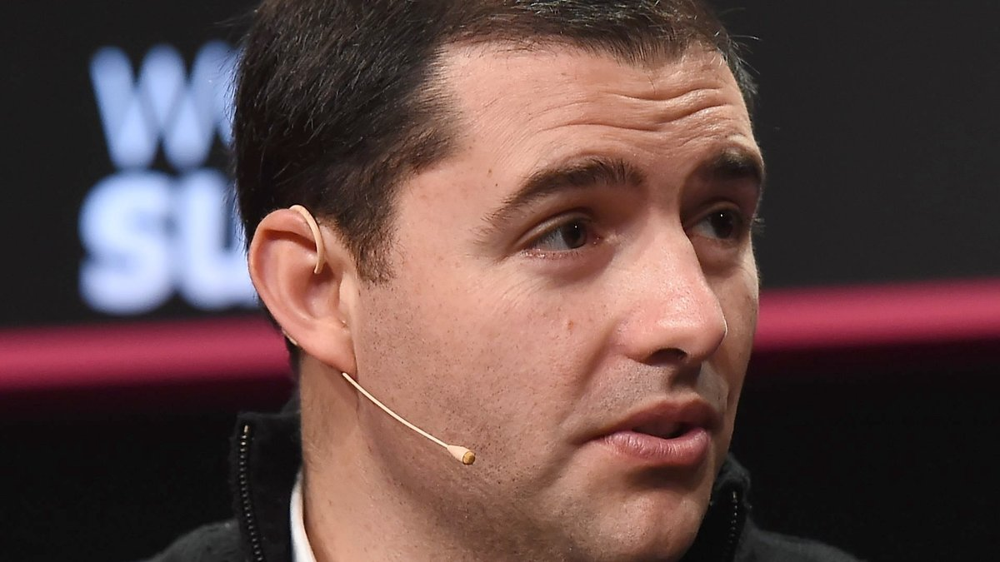
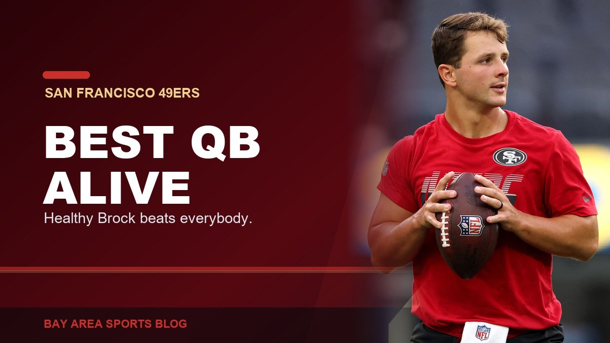
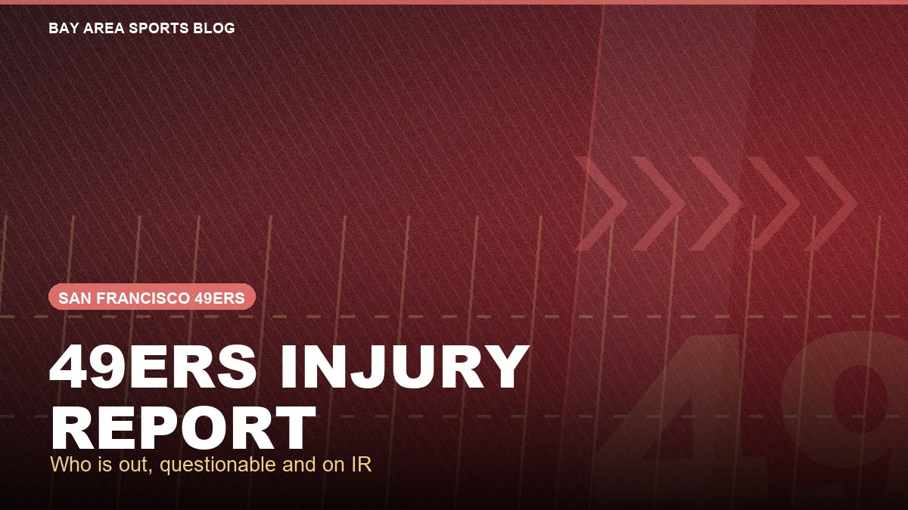
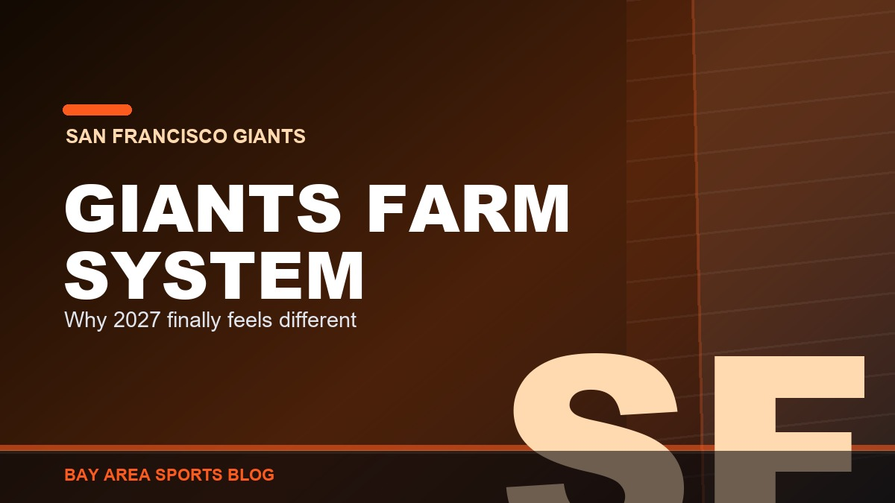
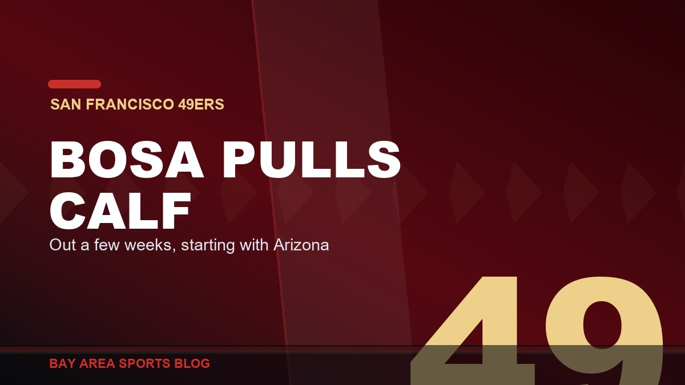
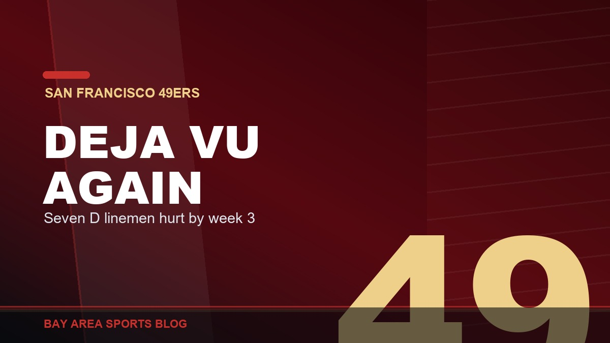
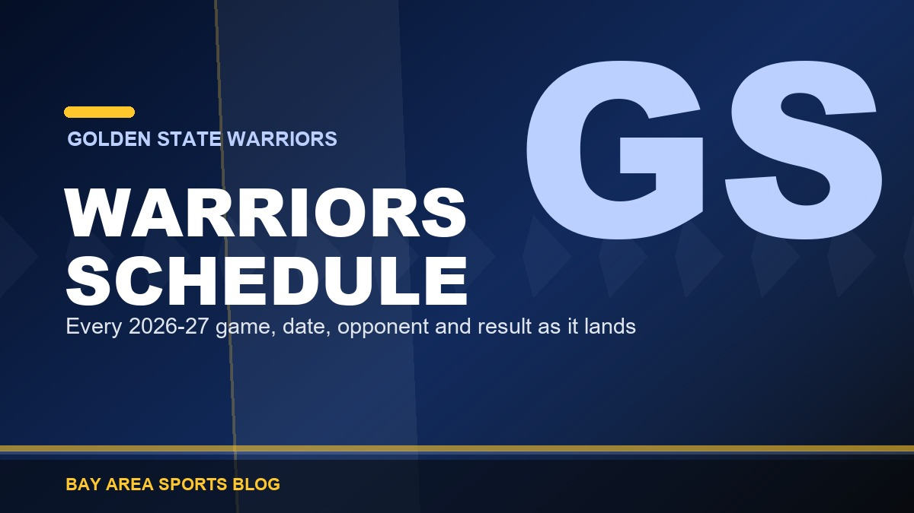
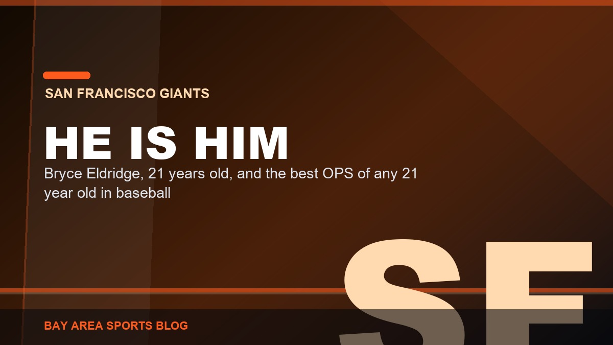
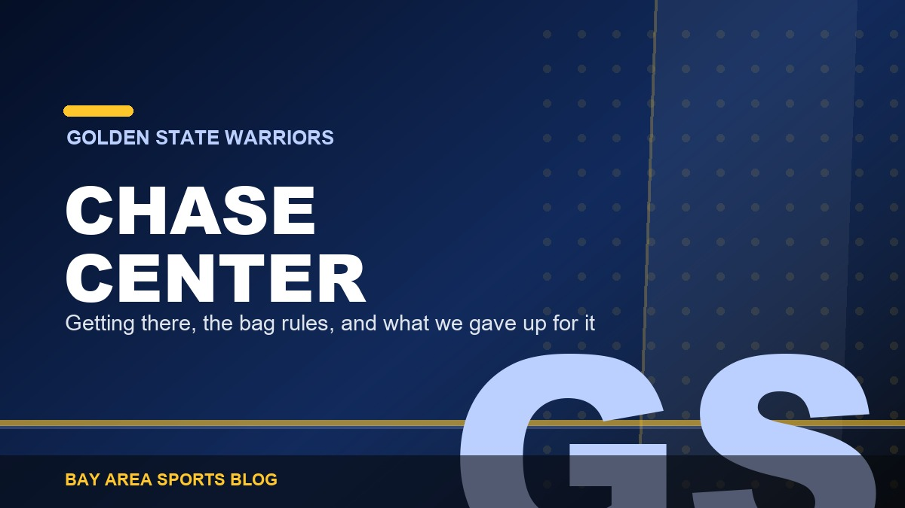

Latest Stories
Everything we have published, newest first. Opinion, recaps, history, and columns across every Bay Area team.

Cowherd Calls Brock Purdy the Best QB Ever. Don't Jinx Seattle.
Colin Cowherd once picked the 49ers third in the West. Now he calls Brock Purdy the best quarterback ever, right before the passer rating record falls in Seattle.

John Lynch Deserves Credit for This 49ers Pass Rush
The guys who pressured Bo Nix came from a sixth round swap, a third round trade, a trade down and the practice squad. A Niners fan gives John Lynch his due.

Juszczyk Out 2 to 3 Weeks and It Hits Us Hard in Seattle
Kyle Juszczyk's knee sprain has him out two to three weeks, so the 49ers go to Seattle without the guy who makes all that backfield motion work. He'll be missed.

The 49ers Are the Team to Beat in the NFC, and It's Not Close
One penalty for 5 yards, zero sacks allowed in four games, one Purdy pick all year. Why Shanahan's 4 and 0 Niners are the team to beat in the NFC.

49ers 24, Broncos 14: Greenlaw Gets His Revenge and We're 4 and 0
49ers beat the Broncos 24 to 14 at Levi's to go 4 and 0. Greenlaw's 12 tackles against his old team, Kittle's dagger, zero sacks again, and Juszczyk's knee.

Mykel Williams Returns to Practice and the 49ers Defense Needs Him
Mykel Williams is back at 49ers practice off his torn ACL with Nick Bosa out. Why the 2025 first rounder matters against the run and the pass, starting Week 5.

Jed York Suspended Six Games and Fined $500,000 by the NFL
The NFL suspended 49ers owner Jed York six games and fined him $500,000 after his Ohio arrest. A Niners fan on why the punishment feels like a shrug.

Brock Purdy Is the Best Quarterback in the NFL. Check the Numbers.
Brock Purdy has the best career passer rating of any active QB and leads the league at 133.1. The Shanahan and weapons excuses are nonsense. A Niners fan's case.

49ers Offense: McCaffrey, Juszczyk and Watkins Keep the Points Coming
Half the 49ers receiver room is hurt and they still scored 98 points in three games. McCaffrey, Kyle Juszczyk and Jordan Watkins, from a Niners fan.

Warriors Injury Report: Who Is Out and Who Is Day to Day
The current Golden State Warriors injury report: every player ruled out or listed day to day, with the injury, the status and the latest update.

49ers vs Broncos Preview: Denver Is the Biggest Test Yet for Purdy
49ers vs Broncos Week 4 preview from a Niners fan: Bosa is out, Denver loves to blitz, and Purdy has not been sacked yet. Key matchups, injuries and a prediction.

49ers Injury Report: Who Is Out, Questionable and on IR
The current San Francisco 49ers injury report: every player listed out, doubtful, questionable, on injured reserve or PUP, with the injury and the latest update.

Brock Purdy Might Be the Best QB Ever, and the Stats Don't Lie
Brock Purdy's 133.1 rating and 9 TDs have fans changing their minds after three games. His 105.7 career rating says it's nothing new. Kyle and Kittle? Please.

Steph Signed Through 2029, and Now I Want One More Parade
Two years, $116 million, and about $20 million left on the table so the Warriors can build around him. Stephen Curry is staying home, and he just gave this team one more real shot.

Raiders 35, Saints 27: Three and Oh, and I Forgot What This Felt Like
Down 27 to 16 in New Orleans, the Raiders forced four fourth quarter turnovers and won 35 to 27. Cousins threw three, Bowers came back with 116 yards. 3-0.

49ers Signing Matthew Judon: Four Pro Bowls, Zero Sacks Last Year
The 49ers are signing Matthew Judon with Nick Bosa's calf and half the defensive line hurt. Four time Pro Bowler, 72 career sacks, zero in 2025. Help or washed?

49ers 36, Cardinals 30: Purdy Threw Four and We're 3 and 0
49ers 36, Cardinals 30 at Levi's. Purdy threw four touchdowns, a Kittle hold wiped out his long TD run, then Kittle caught the dagger a few plays later. 3-0.

Mike Krukow Is Retiring, and I Don't Know How to Say Goodbye
Thirty seven seasons in the Giants booth, three parades, a disease he never let beat him. Sunday is Kruk's last game, and we're losing a good one.

The Giants Were 65 and 95, and I've Never Been More Excited About Next Year
An A plus farm system, five top 100 prospects, Josuar Gonzalez hitting .351 at 18 and Bryce Eldridge already here. Why 2027 finally feels different.

Clemson 24, Cal 10, and Our Offense Never Found the End Zone
Our only touchdown came from the defense. Sagapolutele threw for 119, Clemson ran for 255, and a punt return broke a 10 to 10 tie at Memorial Stadium.

The A's Finished 64 and 98, the Kids Are Hurt, and I'm Still Checking the Box Score
Kurtz, Wilson, Rooker and Soderstrom ended 2026 on the injured list, De Vries had shoulder surgery, and the best young A's core in years is headed to Vegas.

Nick Bosa Injury: A Pulled Calf in Practice, and I'm Out of Patience
Nick Bosa pulled his calf in Thursday's practice and will miss a few weeks, starting with Arizona. Two ACLs, now this. His 49ers future is a real question.

49ers Defensive Line Injuries: Déjà Vu All Over Again, Every Year
Bosa, Collins, Okuayinonu, West, Thompson, Height, Mykel Williams. Seven 49ers defensive linemen hurt by week 3. When does this stop being bad luck?

Plus 42, Best Margin in the NFL, and I Spent Tuesday Counting Who's Out
The 49ers are plus 42 through two games, the best point differential in the NFL. Pearsall, Tonges, Collins, Stribling and Robinson are out. Arizona is Sunday.

They Signed the Kid from Stockton, and He's Turning 33 on the Practice Squad
Brandin Cooks, the Stockton receiver with 9,811 career yards, is joining the 49ers practice squad. The room is hurt. Arizona is Sunday at Levi's.

49ers 35, Dolphins 13: Five Straight Scores and I Did Not Sit Down
49ers 35, Dolphins 13 at Levi's. Purdy 20 of 22 for 287, touchdowns on the first five drives, Kittle back, McCaffrey's 100th. We're 2-0.

Guardians 5, Athletics 3: Gelof, Then Nothing
Gelof homered in the first, then Joey Cantillo allowed two hits over six and the bullpen gave up the lead in Cleveland. Four straight losses. 61-93.

A Month Became Ten Weeks and Surgery. Still Trust the 49ers Training Staff?
Last week it was a month and no surgery. Now Stribling's on IR for close to 10 weeks, Piñeiro's sick and Green's shoulder is limited.

The 2026-27 Warriors Schedule, Game by Game
Every Golden State Warriors game in 2026-27 with the date, the opponent, home or away and the result once it is final. Preseason and regular season, all times Pacific.

Bryce Eldridge Is Him, and I'm Done Being Careful About Saying It
A two run homer in the first and a double in the eighth in a 10 to 3 win at St. Louis. He is 21, he is hitting .327 over his last 30 games, and he has the best OPS of any 21 year old in baseball.

Chase Center: How to Get There, What to Know, and What We Gave Up for It
A practical guide to Chase Center: the Muni, BART, Caltrain and ferry routes that actually work, the parking situation, the bag rules, and an honest comparison with Oracle Arena.

The Bay Bridge Series: What Is Left of It, and What the Record Actually Says
The complete Giants against Athletics record, season by season since interleague play began in 1997, plus the 1989 World Series, the four ballparks, and what happens to the series now that the A's play in Sacramento.

Jack Perkins Threw Six and Two Thirds Scoreless and They Lost Anyway
Rays 2, A's 1 on a walk off. Perkins struck out eight and gave up nothing, the lineup managed four hits, and Kurtz, Rooker and Jacob Wilson are all on the 60 day list.

They Sent Stribling Back Out on a Sprained Ankle. Fire the Training Staff.
The medical staff looked at Stribling's ankle for a few minutes and sent him back in. Now he's out a month, and Purdy and Pearsall already showed us this movie.

Thirteen and a Half Over Miami and I Hate Every Half Point of It
The 49ers got ten days after Melbourne to get ready for the Dolphins at Levi's. Stribling is out a month, Tonges' knee is a worry, and a 13.5 point line has me nervous.

Raiders 27, Dolphins 13: Jeanty Twice, Paye Everywhere
Raiders 27, Dolphins 13: Ashton Jeanty scored twice, Kwity Paye had two sacks, and Kirk Cousins nearly gave it away with two picks in Week 1.

The Padres Came Into Our Ballpark and Took All Three
Padres 6, Giants 4 finished a three game sweep at Oracle Park. Devers hit 36 and 37, Logan Webb gave up six on Sunday, and San Diego has won seven straight.

Two Walk Offs, One 19 to 1 Beating, and I Watched Every Inning
A's 8, Mariners 7 on a Lawrence Butler two run walk off homer. Donovan Walton won Friday in ten, and Saturday's 19 to 1 had Carlos Cortes pitching.

The Giants Are 62 and 86, and Rafael Devers Has 36 Homers Nobody Mentioned
Two weeks left, 28 and a half back, and the only things worth watching are Devers finishing a season nobody saw and Bryce Eldridge hitting like a hitter.

The A's Lost Their Whole Middle of the Order and Got Hot Anyway
Kurtz and Rooker on the 60 day, Langeliers and Soderstrom on the 10 day, the 29th ranked ERA in baseball, and seven wins in the last ten games.